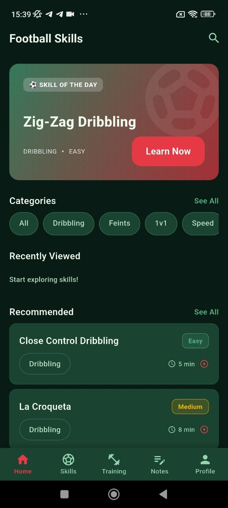
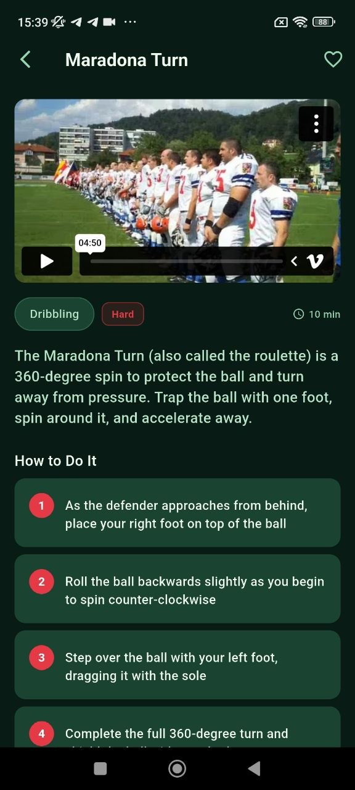
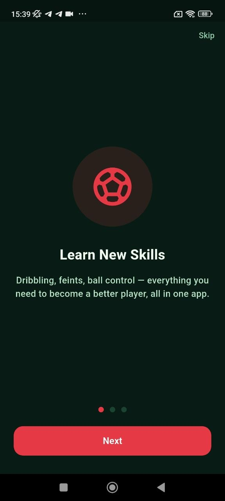
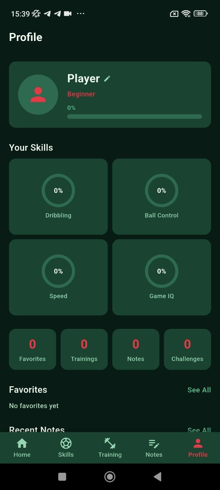
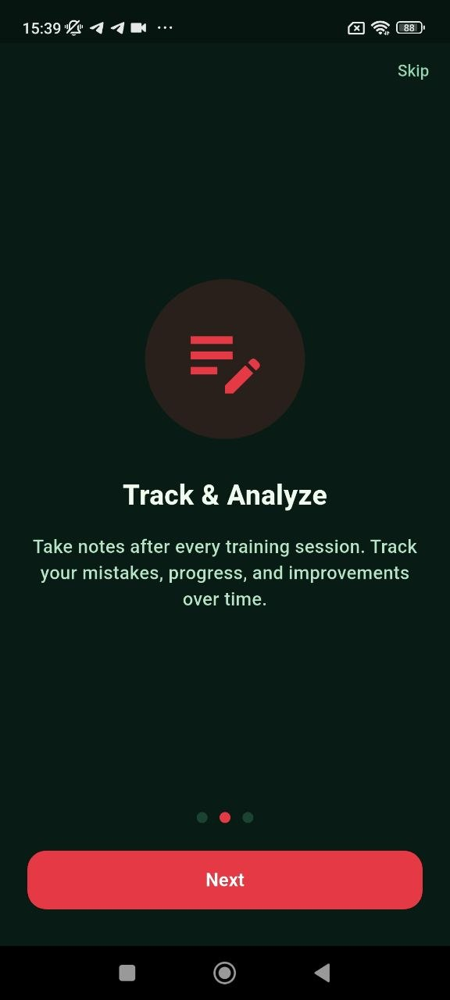

Football skills growth system
Learn skills, track progress and build better football habits step by step
Pinco Impove Skills combines football skill lessons, structured training plans, progress tracking, notes and player profile growth into one focused mobile product designed for everyday improvement.
Skill of the day
Zig-Zag Dribbling and focused daily practice
Player profile
Track dribbling, ball control, speed and game IQ



Dribbling
Ball Control
Speed
Game IQ
Challenges
Notes
Training Plans
Player Profile
Dribbling
Ball Control
Speed
Game IQ
Challenges
Notes
Training Plans
Player Profile
Core product features
Selected screens are used as product storytelling, not as random gallery
Each chosen screenshot explains one part of the app: onboarding, skills discovery, lesson detail, training plans, progress tracking and long-term player growth.
Home dashboard
Start from a football home screen built around daily progress and recommendations
The main screen combines a featured skill, category browsing, recently viewed content and recommended drills, making the app feel active and guided from the first session.
- Skill of the day presentation
- Category navigation by football topic
- Recommended content for continuous learning
Onboarding
Explain the app value clearly from the first screens
The onboarding highlights the core promise: learn new skills, improve daily and build stronger football habits.
Skill lessons
Teach football techniques through visual lessons and step-by-step breakdowns
Skill detail screens combine media, tags, duration and instruction blocks in one clean learning layout.
Skill library
Browse drills by category and difficulty
The skills screen makes it easy to move between easy, medium and hard football techniques while staying inside one category.
Training plans
Turn isolated drills into structured practice plans
Training cards group exercises into focused plans like ball control, dribbling fundamentals and speed work.
Progress tracking
Profile screens make improvement visible over time
The profile screen tracks player level, skill circles, activity counts, favorites, notes and recent growth.
Interactive system
One football app with connected learning, training and tracking
The product connects onboarding, skill discovery, drill detail, full training plans and personal stats into one consistent user flow.
Learn individual football skills with clear categories and lesson pages
Users can start from the skills library, filter by topic, open a lesson and follow specific movement instructions with visual support and estimated time.
Dribbling
Feints
1v1
Speed
Use structured plans instead of random disconnected drills
Training plans group exercises into practical sessions, which makes the app feel more like a real player development tool.
Beginner
Ball Control
Speed
Feint Training

Track profile growth, notes and challenge-based consistency
The profile layer adds long-term meaning to the app by connecting sessions, favorites, notes and skill development.
Favorites
Trainings
Notes
Challenges

Player development
More than a simple drill list
The app combines individual skills, grouped training plans, profile progress and note-taking, which makes it feel like a complete development tool rather than a static content list.
Skill clarity
Training structure
Long-term tracking
Visual identity
Dark emerald football academy mood
The visual language mixes deep green panels, coral actions and soft glass overlays to create a more serious football-learning tone.
Emerald UI
Coral accent
Academy tone
Focused layout
Compact screenshot use
Balanced and premium presentation
Only the strongest screens are used, so the landing stays cleaner and more expensive-looking instead of overloaded.
User impression
Designed for players who want practical football improvement on mobile
The app feels strongest when players want a mix of skill lessons, structured sessions and visible progress in one place.
★★★★★
“The skill pages are easy to follow, and the steps are written in a way that makes real football practice easier.”
★★★★★
“I like that it is not only a skill list. Training plans make the app feel much more useful for actual improvement.”
★★★★★
“Profile tracking, favorites and notes make the whole experience feel more personal and more serious.”
Good football learning apps do not stop at instruction — they help users connect skills, practice structure and long-term growth.
Ready to install?
Keep football skills, training plans and player progress in one app
Download Pinco Impove Skills and use one focused mobile system for drills, sessions, notes, challenges and football growth.